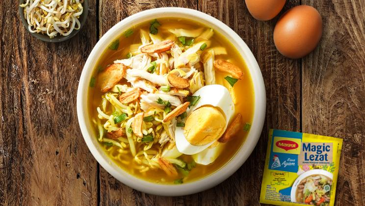

Resep Soto
Soto adalah sup tradisional Indonesia yang menggunakan kaldu ayam atau daging sapi dengan tambahan berbagai bahan seperti mie, telur, dan sayuran.
Bahan-bahan:
- 1 ekor ayam, potong-potong
- 2 liter air
- 3 siung bawang putih
- 2 siung bawang merah
- 2 batang serai, memarkan
- 3 daun salam
- 2 kentang, iris tipis dan goreng
- 100 gram mie soun
- Telur rebus secukupnya
- Garam dan merica secukupnya
Cara Membuat:
- Rebus ayam dalam air hingga matang, angkat dan suwir daging ayamnya.
- Haluskan bawang putih dan bawang merah, tumis hingga harum.
- Masukkan tumisan bumbu, serai, dan daun salam ke dalam kaldu ayam, biarkan mendidih.
- Tambahkan garam dan merica sesuai selera.
- Siapkan mie soun, telur rebus, dan kentang goreng, sajikan dengan kuah soto panas.